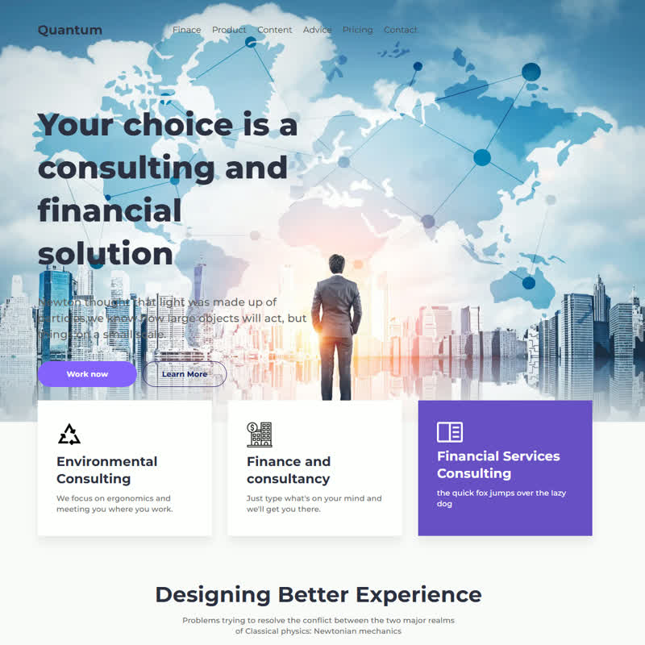
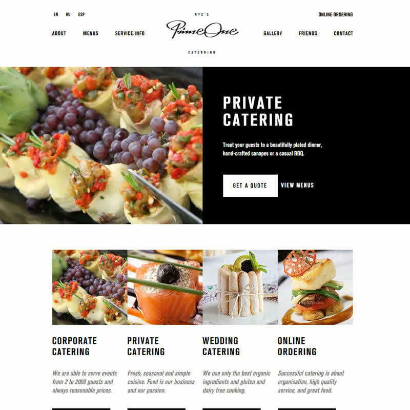
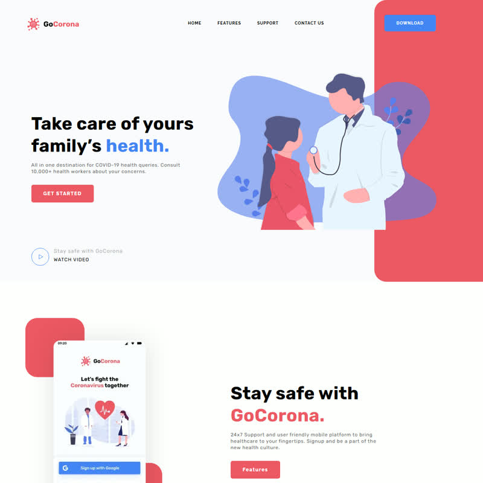

Обучающий проект живёт на структуре: страница курса, программа, блоки материалов, форма записи — и всё это закладывается именно на этапе ТЗ и стиля. Шмелёв собирает такие структуры страниц, а не коллекцию карточек: корпоративный лендинг Quantum (секции услуг и команды) и мультиязычный сайт Prime One Catering (меню, бронирование, 3 языка) сделаны как система экранов с продуманным наполнением блоков. Стилевое решение он делает в Figma на основе вашего ТЗ с элементами бренд-бука — навыки figma/html5/css2/tilda подтверждены прайсом (лендинг из Figma-макета — 12 000 ₽ / 5 дней) и живыми работами (GoCorona, RetroBike).

Доказывает умение выстраивать структуру страниц и содержательные секции (услуги, команда, анимации) — ровно то, что нужно для правки ТЗ обучающего проекта

Мультиязычный сайт с меню и бронированием: пример согласования содержания блоков под разные сценарии пользователя — тот же навык для страниц курса и формы записи

Адаптив со слайдером и выдержанной структурой секций: дисциплина блоков и первого экрана, на которую опирается стилевое решение
В первом ответе прошу клиента прислать действующее ТЗ и зафиксировать состав страниц и обязательные блоки (курсы, программа, запись) — от этого сразу зависят и правки, и стилевое решение. Риска срыва нет: этап короткий и идёт поэтапно с первого дня — правки ТЖ на 1-2 день, стиль к 4-му, каждый шаг выносится на согласование до перехода к следующему.
Эта страница собрана под ваш заказ: если пункты совпали с ожиданиями - отвечайте на моё сообщение на бирже, и мы сверим первые этапы детально.